Objetivo
Implementar y analizar, en un entorno de laboratorio controlado, una simulación de ingeniería social mediante Social-Engineer Toolkit (SET), utilizando una página web ficticia para comprender el funcionamiento de una técnica de captura de información y reconocer los elementos que permiten identificar un intento de phishing.
Descripcion del escenario
El área de seguridad informática de una organización ha recibido varios reportes de empleados que aseguran haber recibido un mensaje relacionado con una supuesta actualización de sus credenciales. El mensaje contiene un enlace que dirige a un portal aparentemente institucional. La página incluye logotipo, campos de usuario y contraseña y un mensaje indicando: “Su sesión ha expirado. Inicie sesión nuevamente para continuar.” A primera vista, nada parece fuera de lo común. Sin embargo, el portal no pertenece a la organización.
¿Qué es un Credential Harvester y cuál es su función dentro de una campaña de phishing?
Un Credential Harvester (o recolector de datos) es un programa o sitio web falso diseñado específicamente para robar nombres de usuario, contraseñas y otros datos de acceso de las personas. Dentro de una campaña de phishing (estafa para robar datos mediante engaños), esta herramienta cumple la función de trampa final.
El proceso sigue estos pasos:
- El anzuelo (El correo o mensaje): El atacante envía un mensaje masivo que parece legítimo (por ejemplo, un aviso de tu banco o de tu correo electrónico).
- El enlace trampa: El mensaje te pide hacer clic en un enlace porque hay un "problema urgente" con tu cuenta.
- La página falsa: El enlace te lleva a un sitio web falso que se ve idéntico al real (como la página de inicio de sesión de Microsoft, Google o un banco).
- La recolección: Detrás de esa página opera el credential harvester. Cuando escribes tus datos y haces clic en "Entrar", el sistema captura esa información de inmediato.
- El robo: Los datos viajan de inmediato al servidor del atacante. El usuario suele ver un error o es redirigido a la página real, pero el daño ya está hecho.
Entre los datos que un Credential Harvester puede robar se encuentran:
- Nombres de usuario o correos electrónicos.
- Contraseñas de acceso.
- Códigos de verificación temporal (en ataques más avanzados).
- Datos de tarjetas de crédito.
Configuración del laboratorio
Para esta actividad se utilizó la herramienta Social-Engineer Toolkit (SET) desde Kali Linux, localizando el módulo Credential Harvester Attack Method dentro del menú de Website Attack Vectors.
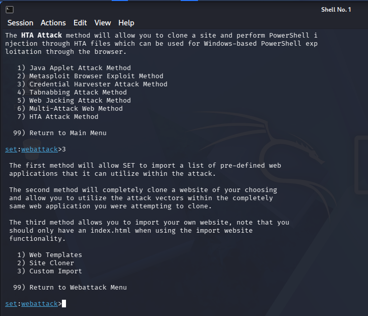
Se diseñó una página web ficticia que simula un sistema institucional de autenticación, con los siguientes elementos: nombre del sistema, campo de usuario, campo de contraseña, botón de ingreso y un mensaje relacionado con la expiración de la sesión. Antes de trasladar los archivos a Kali Linux, se verificó su funcionamiento de forma local, abriéndolos directamente en el navegador del equipo host:
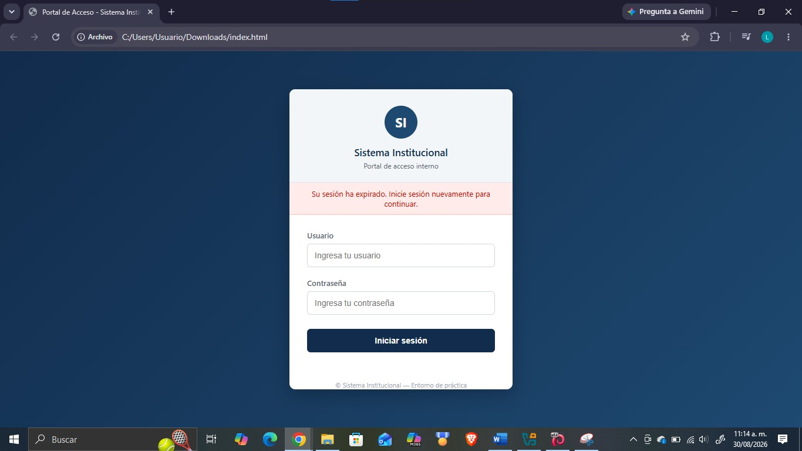
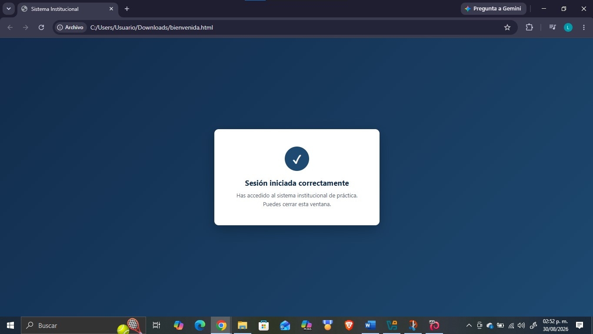
Posteriormente, los archivos index.html y bienvenida.html se copiaron a una carpeta dentro del escritorio de la máquina virtual de Kali Linux (Desktop/Act04/):
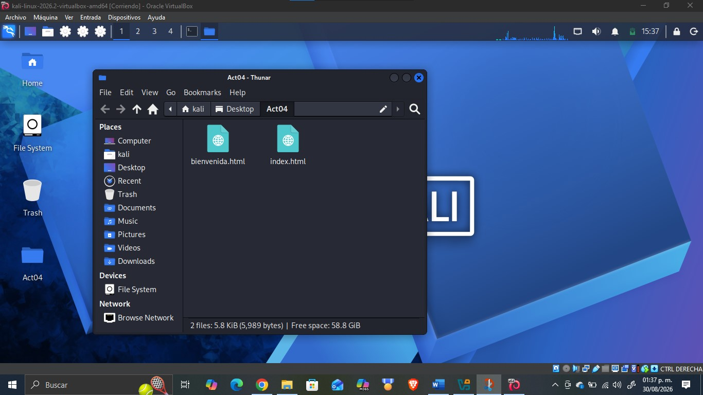
Dentro de SET, se seleccionó la opción 3) Custom Import del módulo Credential Harvester, la cual permite importar un sitio propio en lugar de clonar una página real o una plantilla predefinida ambas opciones prohibidas para esta actividad. Se configuró la dirección IP local de la máquina Kali (10.0.2.15) para el reporte de capturas, así como la ruta de la carpeta del sitio (/home/kali/Desktop/Act04/):
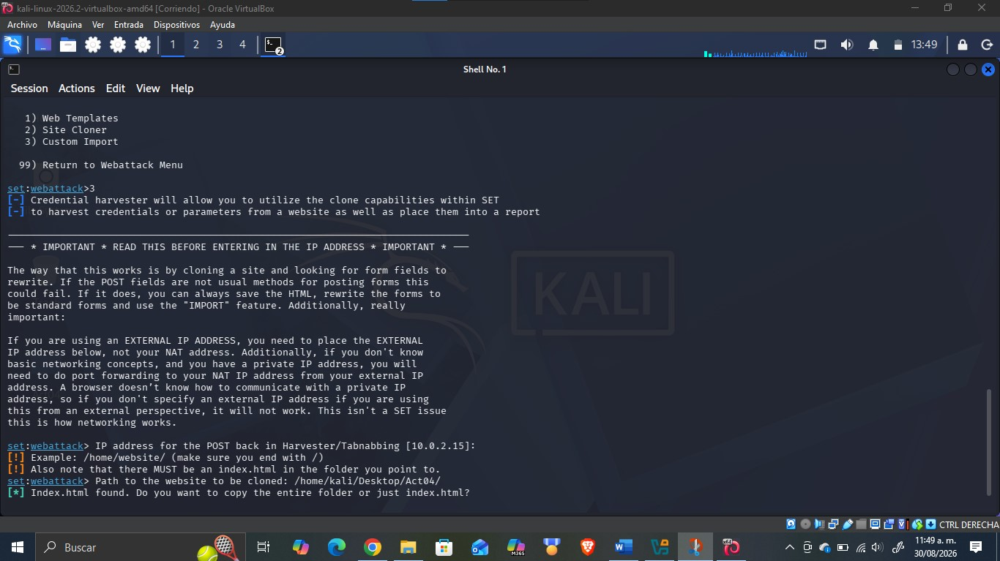
Se eligió copiar la carpeta completa, para incluir también bienvenida.html, y se indicó como URL de redirección posterior al envío del formulario la dirección http://10.0.2.15/bienvenida.html, evitando así el uso de dominios o sitios reales, tal como lo exige la actividad. Con esto, el servidor del Credential Harvester quedó activo en el puerto 80, a la espera de capturas:
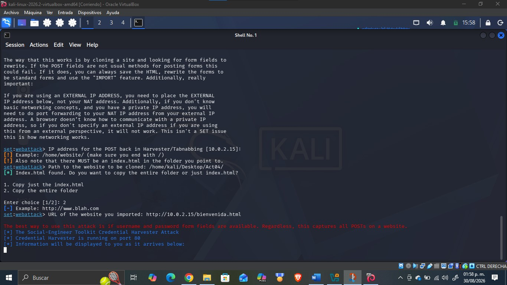
Evidencias y descripción del funcionamiento
Para simular el ataque de ingeniería social, se abrió el navegador dentro de la propia máquina de Kali Linux y se accedió a la dirección local http://10.0.2.15, donde se cargó la página de inicio de sesión ficticia:
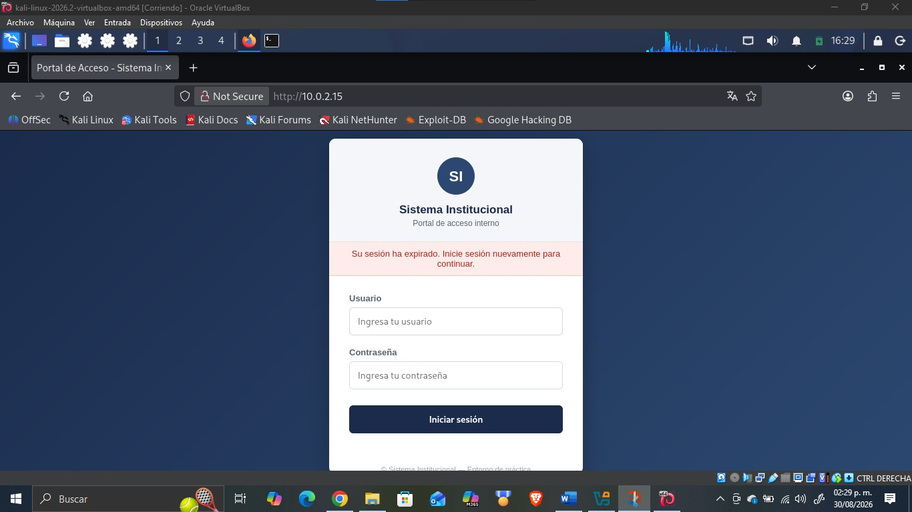
Se ingresaron credenciales de prueba usuario: JuanPe12, contraseña: Prueba1234 y se envió el formulario:
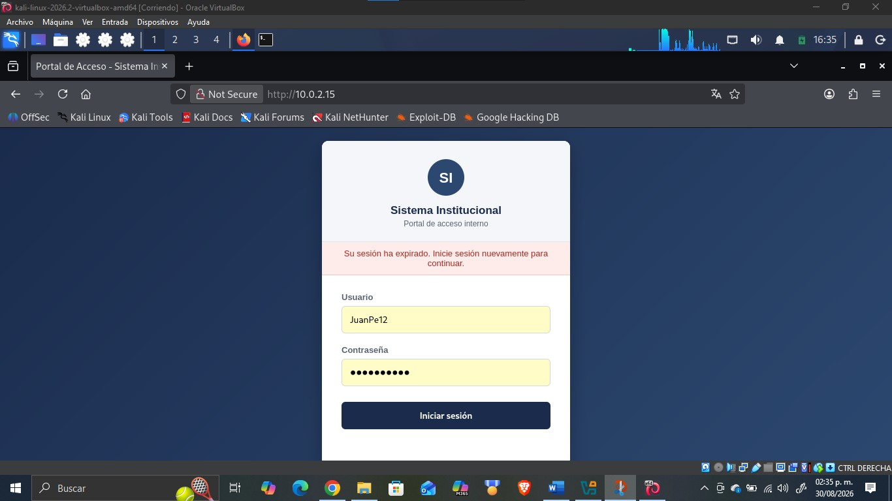
Tras dar clic en “Iniciar sesión”, el navegador intentó redirigir a la página bienvenida.html; sin embargo, se mostró una pantalla en blanco en lugar del mensaje de confirmación esperado:
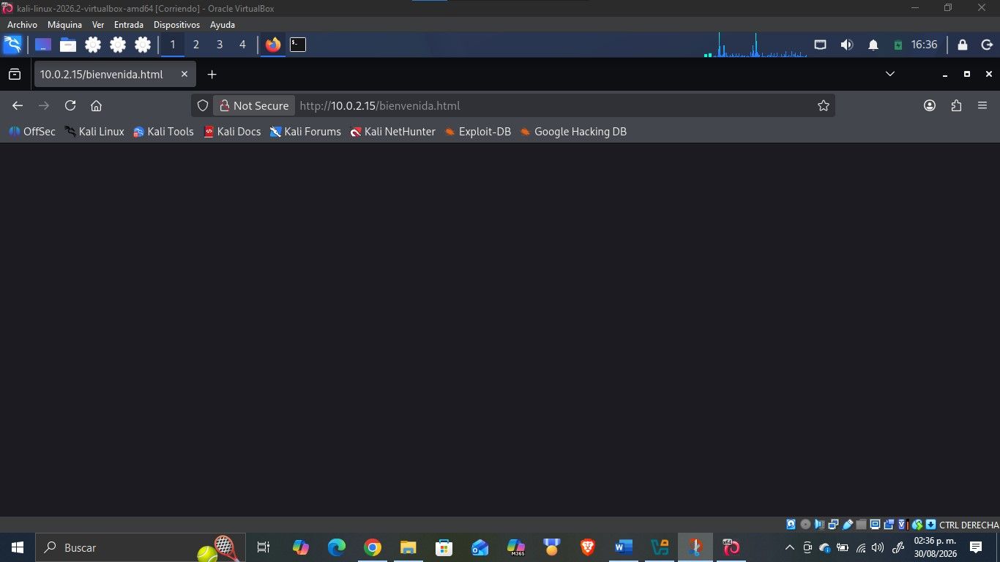
Al revisar la terminal donde se ejecutaba SET, se confirmó que las credenciales sí fueron capturadas correctamente, ¡mostrando el mensaje “WE GOT A HIT!” junto con los valores enviados (usuario=JuanPe12, password=Prueba1234), por lo que la prueba de laboratorio se consideró exitosa:
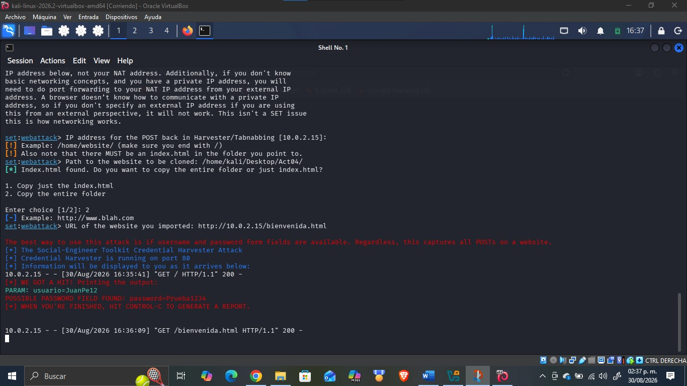
Adicionalmente, al finalizar la ejecución (Ctrl+C) SET generó un reporte que conserva el registro de la captura incluso después de terminar el proceso. Dado que SET se ejecutó con privilegios de superusuario, dicho reporte se guardó dentro de /root/.set/reports/; se copió a /home/kali/Desktop/Act04/Reporte/ para poder consultarlo. El archivo XML resultante confirma, de forma persistente, la URL utilizada y los parámetros capturados (usuario y password):
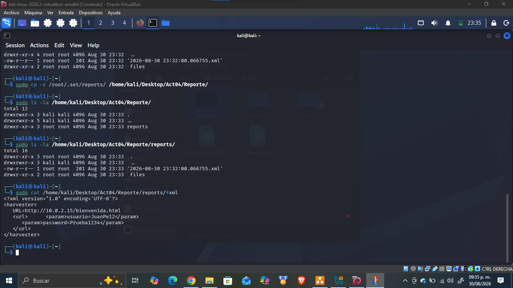
Explicación del flujo de captura de información
El flujo que sigue la información dentro de este laboratorio es el siguiente:
- El usuario accede a la página ficticia (index.html) servida por el módulo Credential Harvester de SET.
- Al completar el formulario y presionar “Iniciar sesión”, los datos se envían mediante una solicitud HTTP POST hacia ese mismo servidor.
- El servidor Python que levanta SET intercepta la solicitud POST, identifica los campos del formulario (usuario, password) y los muestra en texto plano en la terminal, quedando registrados como evidencia de la captura.
- Finalmente, el servidor intenta redirigir al navegador hacia la URL configurada (bienvenida.html) para simular una experiencia de inicio de sesión normal y evitar levantar sospechas en la víctima.
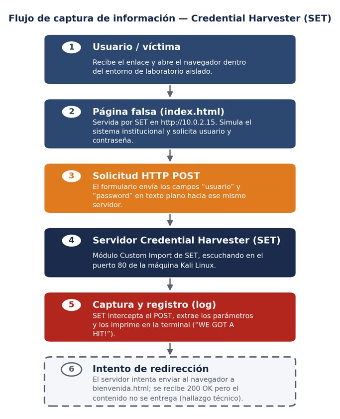
Captura de credenciales vs. vulneración de una contraseña
Es importante distinguir estos dos conceptos, ya que suelen confundirse. La captura de credenciales mediante Credential Harvester lo realizado en este laboratorio no rompe ni descifra ninguna contraseña: la víctima la entrega voluntariamente al creer que está iniciando sesión en un sistema legítimo, y el atacante simplemente la recibe en texto plano a través del formulario. La vulneración de una contraseña, en cambio, es un proceso distinto en el que el atacante ya posee un dato cifrado o protegido (por ejemplo, un hash de contraseña obtenido de una base de datos filtrada) y aplica técnicas como fuerza bruta, diccionarios o ataques de rainbow table para intentar revertirlo hasta obtener el valor original. En resumen: el Credential Harvester ataca al usuario mediante el engaño (ingeniería social), mientras que la vulneración de contraseñas ataca al dato mediante cómputo.
Controles de seguridad
Indicadores de phishing identificados en el escenario
A partir del portal ficticio construido para esta práctica, se identificaron los siguientes indicadores que, en un caso real, deberían levantar sospecha en cualquier usuario capacitado:
- Dirección con IP en lugar de dominio: el portal se accede mediante http://10.0.2.15, una dirección IP cruda, en vez de un dominio oficial reconocible de la organización (por ejemplo, portal.empresa.com).
- Ausencia de HTTPS: la conexión se realiza por HTTP sin cifrar (“Not Secure” en la barra del navegador), sin candado ni certificado que valide la identidad del sitio.
- Mensaje de urgencia no solicitado: el aviso “Su sesión ha expirado. Inicie sesión nuevamente para continuar.” aparece sin que el usuario haya realizado ninguna acción previa que lo justifique.
- Falta de identidad visual verificable: el portal usa un logotipo genérico (“SI”) y ningún elemento que confirme de forma inequívoca que pertenece a la organización real.
- Origen inesperado del enlace: según el escenario, el mensaje llega por un canal no habitual (correo/mensaje no solicitado) y no a través de un acceso ya conocido o guardado por el usuario (favorito, aplicación oficial, etc.).
Controles de seguridad propuestos
A partir de lo observado en el laboratorio, se proponen los siguientes controles para prevenir o reducir el impacto de ataques de phishing basados en Credential Harvester dentro de una organización. Para cada uno se indica también su alcance y sus limitaciones, ya que ningún control por sí solo elimina el riesgo por completo:
- Autenticación multifactor (MFA): aunque un atacante logre robar el usuario y la contraseña de una persona, exigir un segundo factor de verificación (token, aplicación autenticadora o biometría) reduce drásticamente la probabilidad de que pueda acceder a la cuenta.
- Capacitación y concienciación del personal: entrenar a los empleados para reconocer mensajes de “sesión expirada” no solicitados, remitentes sospechosos y enlaces que no coinciden con los dominios oficiales de la organización.
- Verificación de la URL y del certificado: fomentar el hábito de confirmar el dominio real y el candado de seguridad (HTTPS) antes de introducir credenciales, desconfiando de portales que usan una dirección IP en lugar del dominio institucional.
- Filtrado de correo y gestores de contraseñas: implementar filtros anti-phishing a nivel corporativo y promover el uso de gestores de contraseñas, ya que estos no autocompletan credenciales en dominios distintos al legítimo, lo que ayuda a detectar portales falsos.
- Canal de reporte y monitoreo de accesos: contar con un canal claro para que el personal reporte mensajes o portales sospechosos, y revisar periódicamente los registros de acceso en busca de patrones anómalos.
Alcance: protege incluso si la contraseña ya fue robada. Limitación: no impide el robo de la contraseña en sí, y algunos ataques avanzados (phishing en tiempo real / adversary-in-the-middle) pueden interceptar también el segundo factor.
Alcance: reduce la probabilidad de que el usuario llegue a introducir sus datos en el portal falso. Limitación: depende del factor humano; un mensaje de phishing bien elaborado o un momento de distracción puede evadir la capacitación recibida.
Alcance: es un indicador rápido y accesible para cualquier usuario. Limitación: existen ataques que sí logran certificados HTTPS válidos para dominios muy similares al real (typosquatting), por lo que no es una garantía absoluta.
Alcance: bloquea buena parte de los intentos antes de que lleguen al usuario y añade una verificación técnica automática del dominio. Limitación: ningún filtro es perfecto; mensajes nuevos o muy dirigidos (spear phishing) pueden pasar el filtro igualmente.
Alcance: permite reaccionar rápido y contener campañas activas antes de que afecten a más personas. Limitación: es un control reactivo/detectivo, no preventivo: actúa después de que el intento de phishing ya ocurrió.
Conclusión
Esta actividad permitió comprender, dentro de un entorno controlado y aislado, cómo opera técnicamente un ataque de phishing basado en un Credential Harvester: desde el diseño de una página falsa convincente hasta la captura y el registro de las credenciales introducidas por la víctima. Configurar el módulo Custom Import de SET también dejó ver una limitación real de la herramienta la incapacidad de su servidor ligero para entregar correctamente páginas adicionales lo cual refuerza la idea de que, en un ataque real, el atacante depende de que cada pieza del engaño funcione de manera perfectamente creíble. Desde la perspectiva defensiva, el ejercicio deja claro que los indicadores de un intento de phishing (URLs con IP en lugar de dominio, mensajes de urgencia no solicitados, portales fuera de la infraestructura oficial) son detectables si el usuario está capacitado para reconocerlos, lo que confirma que la concienciación y los controles técnicos como MFA siguen siendo la defensa más efectiva frente a este tipo de amenazas.
Referencias bibliográficas
- CrowdStrike. (2025). What Is Credential Harvesting? CrowdStrike. https://www.crowdstrike.com/en-us/cybersecurity-101/cyberattacks/credential-harvesting/
- Cybersecurity and Infrastructure Security Agency (CISA). (2021). Phishing Tip Sheet. https://www.cisa.gov/sites/default/files/publications/Spanish%20-%20Cybersecurity%20Awareness%20Month%202021%20-%20Phishing%20Tip%20Sheet.pdf
- TrustedSec. (s.f.). Social-Engineer Toolkit (SET) Documentación oficial. GitHub. https://github.com/trustedsec/social-engineer-toolkit